전기산업기사 (2004-08-08 기출문제)
1과목: 전기자기학
1. 길이 50cm, 반지름 1cm의 원형 단면적을 가진 가늘고 긴 공심 원통 솔레노이드가 있다. 자기 인덕턴스를 10mH로 하기 위한 권회수는 약 몇 회인가?
- 2.55×103
- 3.55×103
- 2.55×104
- 3.55×104
(정답률: 46%)

2. 전자계에 대한 맥스웰의 기본 이론이 아닌 것은?
- 자계의 시간적 변화에 따라 전계의 회전이 생긴다.
- 전도전류는 자계를 발생시키나, 변위전류는 자계를 발생시키지 않는다.
- 자극은 N, S극이 항상 공존한다.
- 전하에서는 전속선이 발산된다.
(정답률: 66%)
3. 환상 철심에 감은 코일에 5A의 전류를 흘리면 2000AT의 기자력이 생기는 것으로 한다면, 코일의 권수는 얼마로 하여야 하는가?
- 100회
- 200회
- 300회
- 400회
(정답률: 84%)
4. 전계 E=√2 Ee sinω
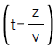
[V/m]의 평면 전자파가 있다. 진공 중에서의 자계의 실효값은 몇 A/m 인가?- 2.65×10-1 Ee
- 2.65×10-2 Ee
- 2.65×10-3 Ee
- 2.65×10-4 Ee
(정답률: 47%)
5. 반지름 a[m]의 도체구와 내외 반지름이 각각 b[m] 및 c[m]인 도체구가 동심으로 되어 있다. 두 도체구 사이에 비유전률 εs인 유전체를 채웠을 경우의 정전용량은 몇 F 인가?
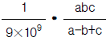
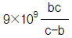
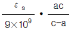
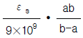
(정답률: 61%)
6. 반지름 r[m], 권수 N회의 원형코일이 자속밀도 B[T]의 균일한 자계 중을 중심축이 자계와 직교하도록 하고 매분 n회전할 때 코일에 발생하는 전압의 진폭은 몇 V 인가?
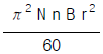
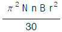
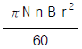
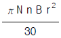
(정답률: 24%)
7. 도전률이 연동선의 62%인 알루미늄선의 고유저항은 몇 Ωㆍm 인가? (단, 표준 연동선의 도전률은 58×106 ℧/m 이다.)
- 2.78×10-8
- 2.93×10-8
- 3.41×10-8
- 3.60×10-8
(정답률: 44%)
8. 반지름 a 인 원주 도체의 단위길이당 내부 인덕턴스는 몇 H/m 인가?
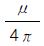
- 4π μ
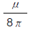
- π μ
(정답률: 57%)
9. 전기쌍극자로부터 r 만큼 떨어진 점의 전위의 크기 V 는 r 과 어떤 관계에 있는가?
- V∝r
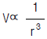
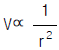
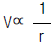
(정답률: 40%)
10. 유전체내의 정전 에너지식으로 옳지 않은 것은?
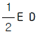
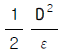
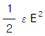
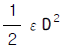
(정답률: 54%)
11. 어느 코일의 전류가 0.04초사이에 4A 변화하여 기전력 2.5V를 유기하였다고 하면 이 회로의 자기인덕턴스는 몇 mH 인가?
- 25
- 42
- 58
- 62
(정답률: 67%)
12. 자계의 세기에 관계없이 급격히 자성을 잃는 점을 자기 임계온도 또는 큐리점(Curie point)이라고 한다. 순철의 경우 이 온도는 약 몇 ℃ 인가?
- 0
- 370
- 570
- 770
(정답률: 44%)
13. 그림과 같이 진공 중에 서로 평행인 무한 길이 두 직선 도선 A, B가 d[m]떨어져 있다. A, B의 선전하 밀도를 각각 λ1[C/m], λ2[C/m]라 할 때, A로부터
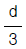
인 점의 전계의 세기가 0 이었다면 λ1과 λ2 의 관계는?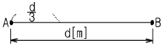
- λ2=
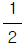
λ1 - λ2=2λ1
- λ2=3λ1
- λ2=9λ1
(정답률: 50%)
14. 균등자계 H 중에 놓여진 투자율 μ 인 자성체를 외부자계 Ho 중에 놓았을 때 자화의 세기는 몇 Wb/m2 인가? (단, 자성체의 감자율은 N 이다.)
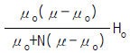
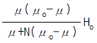
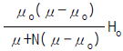
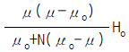
(정답률: 31%)
15. 반지름 a 인 액체 상태의 원통상 도선 내부에 균일하게 전류가 흐를 때 도체 내부에 자장이 생겨 로렌츠의 힘으로 전류가 원통 중심방향으로 수축하려는 효과는?
- 펠티에 효과
- 톰슨효과
- 핀치효과
- 제에벡효과
(정답률: 64%)
16. 전기력선 밀도를 이용하여 주로 대칭 정전계의 세기를 구하기 위하여 이용되는 법칙은?
- 패러데이의 법칙
- 가우스의 법칙
- 쿨롱의 법칙
- 톰슨의 법칙
(정답률: 59%)
17. 합성수지의 절연체에 5×103 V/m의 전계를 가했을 때, 이때의 전속밀도를 구하면 약 몇 C/m2 이 되는가? (단, 이 절연체의 비유전률은 10 으로 한다.)
- 1.1×10-4
- 2.2×10-5
- 3.3×10-6
- 4.4×10-7
(정답률: 51%)
18. 접지 구도체와 점전하간에는 어떤 힘이 작용하는가?
- 항상 0 이다.
- 조건적 반발력 또는 흡인력이다.
- 항상 반발력이다.
- 항상 흡인력이다.
(정답률: 80%)
19. 무한장 직선 도체에 전류 I[A]가 흐르고 있을 때 도체에서 r[m] 떨어진 점 P 의 자속밀도는 몇 Wb/m2 인가?
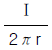
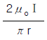
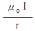
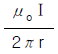
(정답률: 60%)
20. 공기 중에서 접지된 무한 넓이 평면 도체판으로부터 r[m] 떨어진 점에 Q[C]의 점전하를 놓을 때, 이 점전하에 작용하는 힘(引力)의 크기는 몇 N 인가?
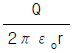
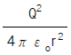
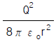
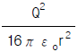
(정답률: 51%)
2과목: 전력공학
21. 전력계통의 안정도 향상대책이라 볼 수 없는 것은?
- 직렬콘덴서 설치
- 병렬콘덴서 설치
- 중간개폐소 설치
- 고속차단, 재폐로방식 채용
(정답률: 61%)
22. 선로의 특성임피던스는?
- 선로의 길이가 길어질수록 값이 커진다.
- 선로의 길이가 길어질수록 값이 작아진다.
- 선로의 길이보다는 부하전력에 따라 값이 변한다.
- 선로의 길이에 관계없이 일정하다.
(정답률: 71%)
23. 피뢰기가 구비해야 할 조건 중 잘못 설명된 것은?(오류 신고가 접수된 문제입니다. 반드시 정답과 해설을 확인하시기 바랍니다.)
- 충격 방전개시 전압이 낮을 것
- 상용주파수 방전개시 전압이 높을 것
- 방전내량이 크면서 제한전압이 높을 것
- 속류 차단 능력이 충분할 것
(정답률: 49%)
24. 송배전 선로의 도중에 직렬로 삽입하여 선로의 유도성 리액턴스를 보상함으로서 선로정수 그 자체를 변화시켜서 선로의 전압강하를 감소시키는 직렬콘덴서방식의 특성에 대한 설명으로 옳은 것은?
- 최대 송전전력이 감소하고 정태 안정도가 감소된다.
- 부하의 변동에 따른 수전단의 전압변동률은 증대된다.
- 장거리 선로의 유도 리액턴스를 보상하고 전압강하를 감소시킨다.
- 송ㆍ수 양단의 전달 임피던스가 증가하고 안정 극한 전력이 감소한다.
(정답률: 67%)
25. 일반회로정수가 A , B , C , D 이고 송수전단의 상전압이 각각 ES, ER일 때 수전단 전력원선도의 반지름은?
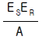
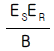
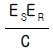
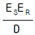
(정답률: 63%)
26. 전류차동계전기는 무엇에 의하여 동작하는지 이에 대한 설명으로 가장 적당한 것은?
- 정상전류와 영상전류의 차로 동작한다.
- 양쪽 전류의 차로 동작한다.
- 전압과 전류의 배수의 차로 동작한다.
- 정상전류와 역상전류의 차로 동작한다.
(정답률: 53%)
27. 송전계통의 중성점접지방식에서 유효접지라 하는 것은?
- 소호리액타접지방식
- 1선 접지시에 건전상의 전압이 상규대지전압의 1.3배 이하로 중성점 임피던스를 억제시키는 중성점접지
- 중성점에 고저항을 접지시켜 1선지락시에 이상전압의 상승을 억제시키는 중성점접지
- 송전선로에 사용되는 변압기의 중성점을 값이 적은 리액턴스로 접지시키는 방식
(정답률: 41%)
28. 경간 200m인 가공 전선로에서 사용되는 전선의 길이는 경간보다 몇 m 더 길게 하면 되는가? (단, 사용 전선의 1m당 무게는 2kg, 인장하중은 4000kg, 전선의 안전률은 2 이고, 풍압하중 등은 무시한다.)
- 1/2
- √2
- 1/3
- 2/3
(정답률: 40%)
29. 250mm 현수애자 1개의 건조섬락전압은 약 몇 kV 정도인가?
- 50
- 60
- 80
- 100
(정답률: 39%)
30. SF6 가스차단기의 설명이 잘못된 것은?
- SF6가스는 절연내력이 공기의 2∼3배이고 소호능력이 공기의 100∼200배이다.
- 밀폐구조이므로 소음이 없다.
- 근거리 고장 등 가혹한 재기전압에 대해서 우수하다.
- 아크에 의해 SF6 가스는 분해되어 유독가스를 발생시킨다.
(정답률: 79%)
31. 차단기에서 0-1분-CO-3분-CO 인 것의 의미는? (단, O: 차단공작, C: 투입동작, CO: 투입동작에 뒤따라 곧 차단동작)
- 일반 차단기의 표준동작책무
- 자동 재폐로용
- 정격차단용량 50mA 미만의 것
- 무전압시간
(정답률: 72%)
32. 3kV 배전선로의 전압을 6kV로 승압하여 동일한 손실률로 송전할 때, 송전전력은 승압전의 몇 배가 되는가?
- √2
- √3
- 2
- 4
(정답률: 44%)
33. 역률 80%인 10000kVA의 부하를 갖는 변전소에 2000kVA의 콘덴서를 설치해서 역률을 개선하면 변압기에 걸리는 부하는 약 몇 kW 인가?
- 8000
- 8540
- 8940
- 9440
(정답률: 40%)
34. 부하율이란?
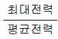
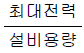
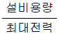
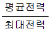
(정답률: 45%)
35. 62000kW의 전력을 60㎞ 떨어진 지점에 송전하려면 전압은 약 몇 kV로 하면 좋은가?
- 66
- 110
- 140
- 154
(정답률: 43%)
36. 출력 30000kW의 화력발전소에서 6000kcal/kg의 석탄을 매시간당 15톤의 비율로 사용하고 있다. 이 발전소의 종합 효율은 약 몇 % 인가?
- 28.7
- 31.6
- 33.7
- 36.6
(정답률: 37%)
37. 농축 우라늄을 제조하는 방법이 아닌 것은?
- 물질 확산법
- 열 확산법
- 기체 확산법
- 이온법
(정답률: 48%)
38. 소호환(arcing ring)의 설치 목적은?
- 애자연의 보호
- 클램프의 보호
- 이상전압 발생의 방지
- 코로나손의 방지
(정답률: 68%)
39. 그림과 같이 폭 B[m]인 수로를 막고 있는 구형 수문에 작용하는 전 압력은 몇 kg 인가? (단, 물의 단위 체적당의 무게를 W[kg/m3]이라 한다.)
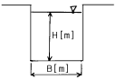
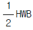
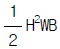
- H2WB
- HWB
(정답률: 53%)
40. 평형 3상 송전선에서 보통의 운전상태인 경우 중성점 전위는 항상 얼마인가?
- 0
- 1
- 송전전압과 같다.
- ∞(무한대)
(정답률: 58%)
3과목: 전기기기
41. 3상 농형 유도 전동기 기동법 중 옳은 것은?
- Y-△ 기동을 한다.
- 콘덴서를 이용하여 기동한다.
- 2차 회로에 저항을 넣어 기동한다.
- 기동저항기법을 사용한다.
(정답률: 46%)
42. 다음 정류방식중 맥동률이 가장 작은 방식은?
- 단상 반파 정류
- 단상 전파 정류
- 3상 반파 정류
- 3상 전파 정류
(정답률: 60%)
43. 사이리스터 2개를 사용한 단상 전파 정류회로에서 직류전압 100[V]를 얻으려면 몇 [V]의 교류전압이 필요한가? (단, 정류기내의 전압강하는 무시한다.)
- 약 111
- 약 141
- 약 152
- 약 166
(정답률: 50%)
44. 1차 전압 6900[V], 1차 권선 3000회, 권수비 20의 변압기가 60[Hz]에 사용할 때 철심의 최대자속[Wb]은?
- 0.86 × 10-4
- 8.63 × 10-3
- 86.3 × 10-3
- 863 × 10-3
(정답률: 52%)
45. 60[Hz]의 전원에 접속된 6극 3상 유도 전동기의 슬립이 0.03 일 때의 회전속도[rpm]는?
- 974
- 1⑤8
- 1164
- 1354
(정답률: 65%)
46. 10[kVA], 2000/100[V] 변압기에서 1차로 환산한 등가 임피던스는 6.2+j7[Ω]이다. 변압기의 % 리액턴스 강하는?
- 0.75
- 1.75
- 3
- 6
(정답률: 46%)
47. 임피던스 강하가 4[％]인 변압기가 운전 중 단락되었을 때 그 단락 전류는 정격 전류의 몇 배인가?
- 15배
- 20배
- 25배
- 30배
(정답률: 64%)
48. 60[Hz] 12극 회전자 외경 2[m]의 동기 발전기에 있어서 자극면의 주변 속도 [m/s]는?
- 32.5
- 43.8
- 54.5
- 62.8
(정답률: 61%)
49. 직류에서 교류로 변환하는 기기는?
- 인버터
- 사이크로 컨버터
- 쵸퍼
- 회전 변류기
(정답률: 70%)
50. 3상 유도전동기에서 비례추이를 하지 않는 것은?
- 효율
- 역율
- 1차 전류
- 동기 와트
(정답률: 43%)
51. 유도전동기 회전자에 2차 주파수와 같은 주파수 전압을 공급하여 속도를 제어하는 방법은?
- 전 전압제어
- 2차 저항법
- 주파수 제어법
- 2차 여자법
(정답률: 38%)
52. 9000[kVA], 6000[V]인 3상 교류 발전기의 % 동기임피던스가 80% 이다.이 발전기의 동기 임피던스는 몇 [Ω]인가?
- 3.0
- 3.2
- 3.4
- 3.6
(정답률: 48%)
53. 220[V], 50[kW]인 직류직권 전동기를 운전하는데 전기자 저항(브러시의 접촉저항 포함)이 0.⑤[Ω]이고 기계적 손실이 1.7[kW], 표유손이 출력의 1[%]이다. 부하전류가 100[A] 일 때의 출력[kW]은?
- 약 19.6 [kW]
- 약 18.2 [kW]
- 약 16.7 [kW]
- 약 14.5 [kW]
(정답률: 40%)
54. 동기 발전기의 병렬운전에 필요하지 않은 조건은?
- 기전력의 주파수가 같을 것
- 기전력의 위상이 같을 것
- 임피던스 및 상회전 방향과 각변위가 같을 것
- 기전력의 크기가 같을 것
(정답률: 64%)
55. 직류 발전기를 병렬 운전할 때 균압선을 설치하여 병렬 운전하는 발전기는?
- 분권 발전기
- 타여자기
- 복권 발전기
- 단극 발전기
(정답률: 53%)
56. 변압기의 1차 권선에 V1=220√2 cosωt[V]의 전압을 가하면 철심자속은 ø =9×10-3 sinωt[Wb], 여자전류의 순시치 i0=√2 (5sinωt- 2sin 3ωt + cosωt - 0.5cos 3ωt)[A]이다. 이 때 철손[W]은?
- 2200
- 12⑤
- 440
- 220
(정답률: 21%)
57. 직류 분권 발전기가 있다. 극당 자속 0.01[Wb], 도체수 400, 회전수 600[rpm]인 6극 직류기의 유도 기전력[V]은? (단, 병렬회로수는 2 이다.)
- 160
- 140
- 120
- 100
(정답률: 56%)
58. 20극 360[rpm]의 3상 동기발전기가 있다. 전슬롯수 180, 2층권으로 각 코일의 권수 4, 전기자 권선은 성형으로 단자전압이 6600[V]인 경우 1극의 자속은 약 몇 [Wb]인가? (단, 권선계수는 0.9라 한다.)
- 0.⑤96
- 0.0662
- 0.0883
- 0.1147
(정답률: 22%)
59. 동기발전기의 부하가 불평형이 되어 발전기의 회전자가 과열 소손되는 것을 방지하기 위하여 설치하는 계전기는?
- 과전압 계전기
- 역상 과전류 계전기
- 계자 상실 계전기
- 부족전압 계전기
(정답률: 39%)
60. 다음은 무슨 회로인가?
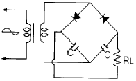
- 배전압 정류 회로
- 다이오드 특성 측정 회로
- 전파 정류 회로
- 반파 정류 회로
(정답률: 25%)
4과목: 회로이론
61. 그림과 같은 회로에 대한 서술에서 잘못된 것은?
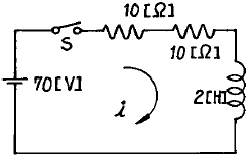
- 이 회로의 시정수는 0.1 초이다
- 이 회로의 특성근은 -10 이다
- 이 회로의 특성근은 +10 이다
- 정상 전류값은 3.5 [A] 이다
(정답률: 54%)
62. 그림과 같은 R-L 회로에서 전달함수를 구하면?
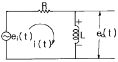
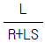
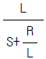
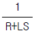
(정답률: 28%)
63. 그림과 같은 π 형 4단자 회로의 어드미턴스 상수중 Y22는?
- 5[℧]
- 6[℧]
- 9[℧]
- 11[℧]
(정답률: 55%)
64. 다음과 같은 전류의 초기값 i(0+)를 구하면?
- 4
- 3
- 2
- 1
(정답률: 61%)
65. 그림과 같은 회로의 2단자 임피던스 Z(s)는? (단, S=jω 라 한다)
(정답률: 31%)
66. 그림과 같은 e=Em sinω t인 정현파 교류의 반파정류파형의 실효값은?
- Em
(정답률: 46%)
67. 어떤 회로의 단자전압이 e=20sinωt+10sin30t[V]이고 전압 강하의 방향으로 흐르는 전류가 i=10sinωt+20sin30t [A]일 때 회로의 역률은 몇 [%] 인가?
- 60
- 80
- 96
- 98
(정답률: 28%)
68. R-L-C 직렬회로에서 R=100[Ω], L=0.1[mH], C=0.1[μF]일 때 이 회로는?
- 진동적이다
- 비진동적이다
- 정현파로 진동한다
- 임계적 진동이다
(정답률: 46%)
69. R=5[Ω], L=10[mH], C=1[μF]의 직렬회로에서 공진주파수 fr[Hz]는 약 얼마인가?
- 3181
- 1820
- 1592
- 1432
(정답률: 52%)
70. 저항 R, 리액턴스 X 와의 직렬회로에 전압 V 를 가했을 때 소비되는 전력은?
(정답률: 45%)
71. 주기적인 구형파 신호의 성분은?
- 성분 분석이 불가능하다.
- 직류분만으로 합성된다.
- 무수히 많은 주파수의 합성이다.
- 교류 합성을 갖지 않는다.
(정답률: 72%)
72. 3상 대칭분 전류를 I0 , I1 , I2 라 하고 선전류를 Ia, Ib, Ic 라고 할 때 Ib는 어떻게 되는가?
- I0+a2I1+aI2
- I0+aI1+a2I2
- I0+I1+I2
(정답률: 53%)
73. 어떤 제어계의 임펄스 응답이 sinωt 일 때의 계의 전달함수는?
(정답률: 48%)
74. 의 전달함수를 미분방정식으로 표시하면?
(정답률: 53%)
75. 대칭 3상 전압이 있다. 1상의 Y전압의 순시값이 Vs = √2 1000sinωt + √2 500sin(3ωt + 20°) + √2 100sin(5ωt+30°) 일 때 성상전압과 선간전압의 비는 얼마인가?
- 약 0.54
- 약 0.64
- 약 0.75
- 약 0.85
(정답률: 36%)
76. 로 표시되는 두 벡터가 있다. 의 값은 얼마인가?
(정답률: 53%)
77. ε -αtcosωt의 라플라스 변환은?
(정답률: 40%)
78. =√3 +j5[Ω]인 3개의 임피던스를 Y결선하여 250[V]의 대칭 3상 전원에 연결하였다. 소비전력은?
- 약 3125[W]
- 약 5412[W]
- 약 6250[W]
- 약 7120[W]
(정답률: 32%)
79. 대칭 좌표법에 관한 설명중 잘못된 것은?
- 대칭좌표법은 일반적인 비대칭 n상 교류회로의 계산에도 이용된다.
- 대칭 3상 전압의 영상분과 역상분은 0 이고, 정상분만 남는다.
- 비대칭 n상 교류회로는 영상분, 역상분 및 정상분의 3성분으로 해석한다.
- 비대칭 3상회로의 접지식 회로에는 영상분이 존재하지 않는다.
(정답률: 58%)
80. 대칭 3상 Y결선에서 선간전압이 100√3 [V]이고 각 상의 임피던스 Z =30+j40[Ω]의 평형 부하일 때 선전류[A]는?
- 2
- 2√3
- 5
- 5√3
(정답률: 45%)
5과목: 전기설비기술기준 및 판단 기준
81. 가공 전선로의 지지물에 시설하는 지선의 시방세목으로 옳은 것은?
- 안전률은 1.2 이상일 것
- 지선에 연선을 사용할 경우 소선은 3가닥 이상의 연선일 것
- 소선은 지름 1.6mm 이상인 금속선을 사용할 것
- 허용 인장하중의 최저는 330㎏으로 할 것
(정답률: 63%)
82. 특별고압 옥외 배전용 변압기를 시설하는 경우, 특별고압 측에는 일반적인 경우에 개폐기와 또한 어떤 것을 시설하여야 하는가?
- 과전류차단기
- 방전기
- 계기용변류기
- 계기용변압기
(정답률: 59%)
83. 시가지에 시설되어 있는 가공 직류 전차선의 장선에는, 가공 직류 전차선간 및 가공 직류 전차선으로 부터 60cm 이내의 부분 이외에는 몇 종 접지공사를 하여야 하는가?
- 제1종 접지공사
- 제2종 접지공사
- 제3종 접지공사
- 특별 제3종 접지공사
(정답률: 47%)
84. 과전류차단기로 시설하는 퓨즈 중 고압전로에 사용하는 비포장 퓨즈는 정격전류의 1.25배의 전류에 견디고 또한 몇 배의 전류로 몇 분안에 용단되는 것이어야 하는가?
- 1.5배로 1분
- 1.5배로 2분
- 2배로 1분
- 2배로 2분
(정답률: 32%)
85. 가공 전선로에 사용하는 지지물의 강도 계산에 적용하는 풍압하중 중 병종풍압하중은 갑종풍압하중에 대한 얼마의 풍압을 기초로 하여 계산한 것인가?
- 1/2
- 1/3
- 2/3
- 1/4
(정답률: 44%)
86. 옥내에 시설하는 저압전선으로 나전선을 절대로 사용할 수 없는 것은?
- 유희용 전차에 전기를 공급하기 위하여 접촉 전선을 사용하는 경우
- 애자사용공사에 의하여 전개된 곳에 전기로용 전선을 시설하는 경우
- 버스덕트공사에 의하여 시설하는 경우
- 금속덕트공사에 의하여 시설하는 경우
(정답률: 52%)
87. 금속관공사에 의하여 저압 옥내배선을 할 때 콘크리트에 매설하는 관의 두께는 최소 몇 ㎜ 이상이어야 하는가?
- 0.6
- 0.8
- 1.0
- 1.2
(정답률: 51%)
88. 용량이 15000kVA 이상의 조상기에는 그 내부에 고장이 생긴 경우를 대비하여 어떤 장치를 반드시 하여야 하는가?
- 병렬로 전력용콘덴서를 설치한다.
- 분로리액터를 설치한다.
- 전로로부터 차단하는 장치를 한다.
- 방전을 시킬 수 있는 장치를 한다.
(정답률: 49%)
89. 일반주택 및 아파트 각 호실의 현관등과 같은 조명용 백열전등을 설치할 때에는 타임스위치를 시설하여야 한다. 몇 분이내에 소등되는 것이어야 하는가?
- 1
- 3
- 5
- 7
(정답률: 52%)
90. 특별고압 가공 전선로의 중성선의 다중 접지 및 중성선을 시설할 때, 각 접지선을 중성선으로부터 분리하였을 경우 각 접지점의 대지전기저항값은 몇 Ω 이하이어야 하는가?
- 100
- 150
- 300
- 500
(정답률: 49%)
91. 저압 옥내간선에 전동기와 전열기 및 전등이 연결되어있다. 몇 A 이상의 허용전류가 있는 전선을 사용하여야 하는가? (단, 전동기의 정격전류는 130A, 전열기는 10A, 전등은 14A 이고 수용률은 100%로 한다.)
- 125
- 154
- 167
- 186
(정답률: 27%)
92. 인도교 위에 시설하는 조명용 저압 가공 전선로에 사용되는 경동선의 최소 굵기는 몇 mm 인가?
- 1.6
- 2.0
- 2.6
- 3.2
(정답률: 47%)
93. 전력보안 가공 통신선을 교통에 지장을 줄 우려가 없는 곳의 도로 위에 시설할 경우에는 지표상 몇 m 까지로 감하여 시설할 수 있는가?
- 4
- 4.5
- 5
- 5.5
(정답률: 24%)
94. "관등회로"라고 하는 것은?
- 분기점으로부터 안정기까지의 전로를 말한다.
- 스위치로부터 방전등까지의 전로를 말한다.
- 스위치로부터 안정기까지의 전로를 말한다.
- 방전등용 안정기로부터 방전관까지의 전로를 말한다.
(정답률: 66%)
95. 3상4선식 22.9kV 중성선 다중접지식 가공 전선로의 전로와 대지간의 절연내력 시험전압은 몇 V 인가?
- 11450
- 21068
- 25190
- 28625
(정답률: 47%)
96. 관, 암거 기타 지중전선을 넣은 방호장치의 금속제 부분 및 지중전선의 피복으로 사용하는 금속체의 접지는 제 몇 종 접지공사로 하여야 하는가? (단, 금속제 부분에는 케이블을 지지하는 금구류를 제외한다.)
- 제1종접지공사
- 제2종접지공사
- 제3종접지공사
- 특별제3종접지공사
(정답률: 54%)
97. 6kV 고압 옥내배선을 애자사용공사로 하는 경우 전선의 지지점간의 거리는 전선을 조영재의 면을 따라 붙이는 경우에는 몇 m 이하이어야 하는가?
- 1
- 2
- 3
- 5
(정답률: 52%)
98. 저압 인입선을 시설할 때 사용하여서는 아니되는 전선은?
- 절연전선
- 다심형 전선
- 비닐코드 전선
- 케이블
(정답률: 42%)
99. 사용전압이 60000V이하인 특별고압 가공 전선로는 상시정전 유도작용(常時靜電 誘導作用)에 의한 통신상의 장해가 없도록 시설하기 위하여 전화선로의 길이 12㎞마다 유도 전류는 몇 ㎂를 넘지 않도록 하여야 하는가?
- 0.5
- 1
- 1.5
- 2
(정답률: 44%)
100. 타냉식의 특별고압용 변압기에는 냉각장치에 고장이 생긴 경우 또는 변압기의 온도가 현저히 상승한 경우에 대비하여 어떤 장치를 반드시 시설하여야 하는가?
- 경보장치
- 절연보강장치
- 공기순환장치
- 변압기유의 순도 측정장치
(정답률: 68%)
L = (μ₀N²A)/l
여기서, μ₀는 자유공간의 유도율, N은 권수, A는 단면적, l은 길이이다.
문제에서 주어진 값으로 대입하면 다음과 같다.
10mH = (4π×10⁻⁷ N² × π×(0.01m)²) / 0.5m
이를 정리하면,
N² = (10mH × 0.5m) / (4π×10⁻⁷ × π×(0.01m)²)
N² = 3.55×10³
따라서, 권회수는 약 3.55×10³회이다. 따라서 정답은 "3.55×10³"이다.